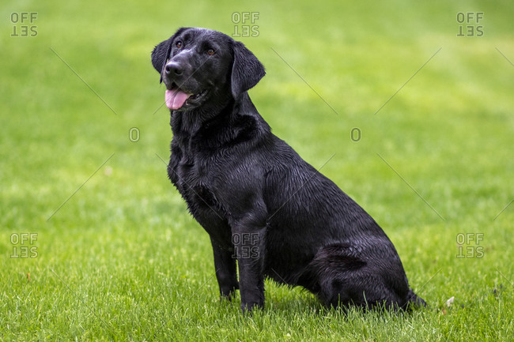

Welcome! (main title)
This is my notebook for practicing HTML while learning.
Last edited:
This is my notebook for practicing HTML while learning.
Last edited:

Headers can are identified with <h1>, can go up to <h6> to change order and size
Can be used for paragraphs of texts, usually for marking up regular text content (<p>)
- <dt> (description title) <dd>(description itself)
Can be unordered (<ul>), ordered (<ol>) or definition (<dl>) depending on the content, all are inside list items (<li>).
Use "<a>" (anchor) and "href" (hypertext reference) to make text within paragraphs into a link
Left off here in the Mozilla guide.
- Albert Einstein
Life is like riding a bicycle.
To keep your balance,
you must keep moving.
In CSS, {color:green} can be used to apply
that color to any element used in our HTML.
Here's the formula for water H2O
52 = 25 , MathML is better for marking math.
Check image files to make sure they're downloaded fast on website
| Name | Breed | Age | Photo |
|---|---|---|---|
| Bob | Golden Retriever | 4 |  |
| Jerry | Black Labrador | 12 |  |